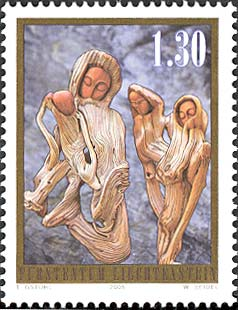
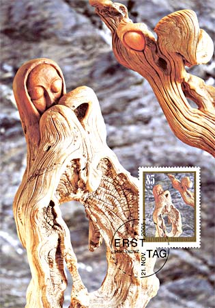
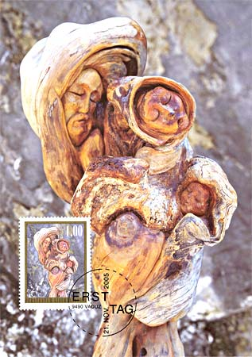
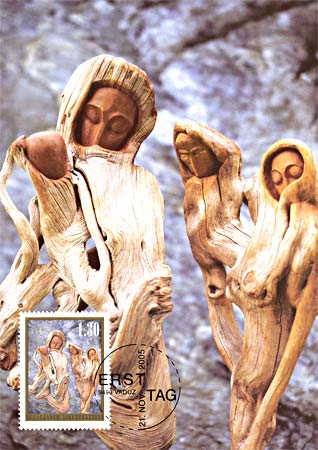

CARVED OUT OF FINE WOOD
Tony Gstöhl from Balzers, Liechtenstein practices a quite rare craft. He takes home the pieces of wood, branches, bits of root and even whole tree stumps that he finds on his numerous walks, and then he refids them into almost living work of art.
"Nature has done most of the work for me already... Often all I have to do is give greater definition to the details. I'm not a sculptor -- instead I put my ideas into effect using the form determined by nature", says Toni Gstöhl.

"You must of course have an eye for what is concealed in a branch, in a hollow tree-stump. Over the years my eye for these things has fortunately got better and better."

Gstöhl, now retired, hones this eye for details and it best fits into the bigger picture in his other hobbies too, primarily drawing and painting.

With an eye to the coming Christmas season, three of his wood sculptures form the theme of a series of stamps: the Annunciation (CHF 0.85), the Holy Family (CHF 1.00) and the Adoration of the Shepards (CHF 1.30).

The Austrian engraver Wolfgang Seidel has preserved in the stamp designs too the high artistic quality of Gstöhl's work and again demonstrated his outstanding engraving skill. The Austrian State Printing House has reproduced Toni Gstöhl's design accurately in every detail by combined photogravure and recess printing.
Source: Briefmarken aus dem Fürstentum Liechtenstein. 21. November 2005.


Links to Christmas stamps on this site:
-
Stamps Christmas Tree, with greetings from 38 stamps collectors, in 16 different languages
-
Liechtenstein, Christmas 2001. Medallions in Wooden Frames
-
Liechtenstein, Christmas 1979. Embroideries.